PROFESSIONAL EXPERIENCE
Vector Digital · Since July 2025
Hi, I’m
System Administrator
I support Windows and Linux systems, troubleshoot networks, and automate infrastructure both in client environments and my own Kubernetes platform.
My work combines day-to-day IT support with building and operating infrastructure. See the systems I’ve built and how I work.
I enjoy solving problems across the full system: the server, the network, and the application people depend on. I learn by building, documenting what works, and tracing issues back to their cause.
Vector Digital · Since July 2025
3 Proxmox hosts · 5 Kubernetes nodes
BAS in IT – System Administration
I support client systems at Vector Digital and build the storefront and connected services for Emiliany. Here’s the work behind the tools.
— Present
Work— Present
Work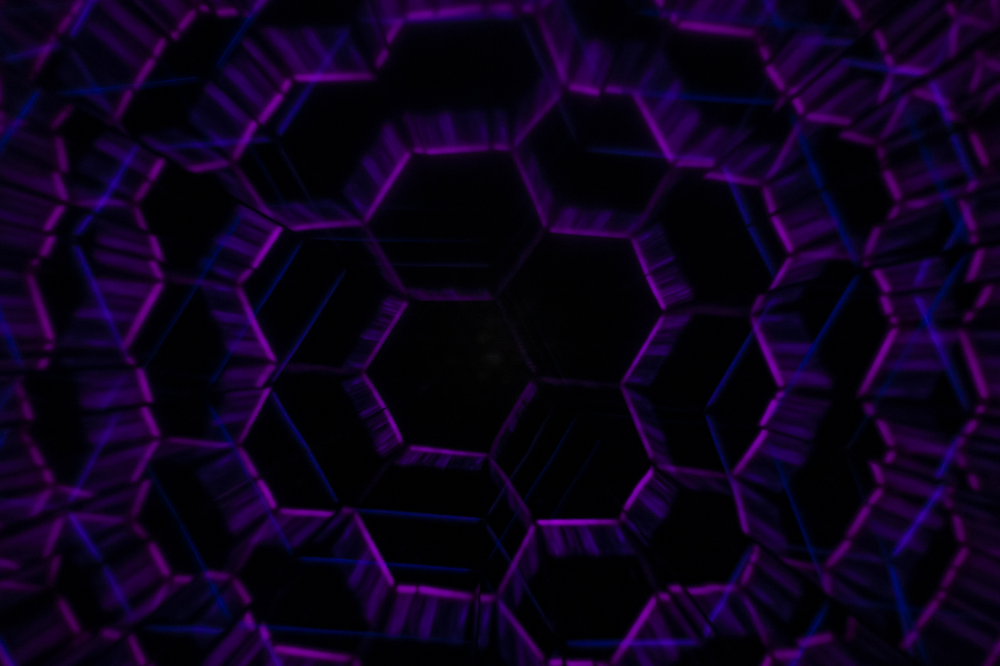
Built a bilingual storefront and connected customer accounts, commerce, marketing, and support.

Explore how an AI browser agent identifies page controls and turns decisions into browser actions.
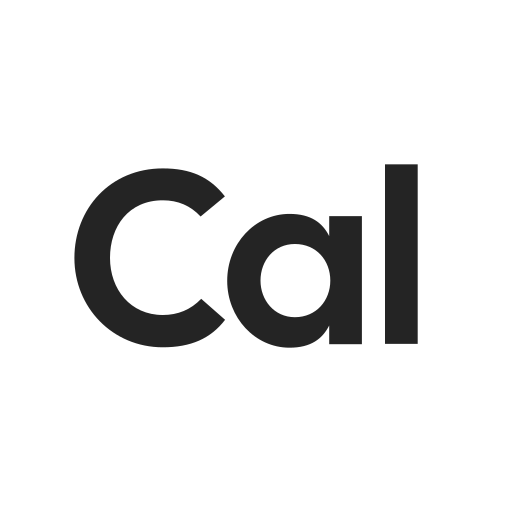
A self-hosted scheduling project based on Cal.diy. Explore the source and setup documentation.
I use these tools in Antalos to run applications and make infrastructure changes repeatable. Select a card for a practical example.
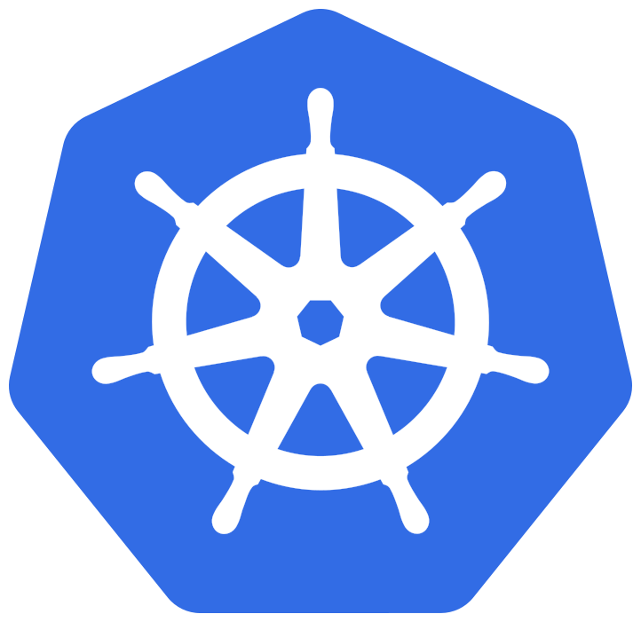
Kubernetes runs the applications in Antalos. I define their deployments, networking, and storage in configuration files.
Three Proxmox hosts run the virtual machines for my Talos Kubernetes cluster and Debian services.
Talos runs my five Kubernetes nodes. Its machine configuration lets me set up the cluster consistently.
Debian runs services alongside my Kubernetes cluster. I use Ansible to configure those virtual machines.
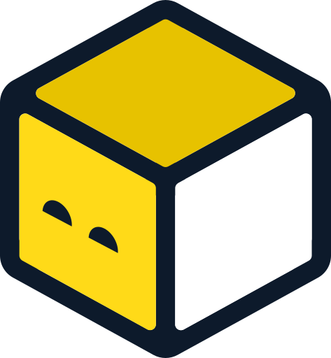
OpenTofu defines the Antalos virtual machines in Git, so I can review changes and recreate them.
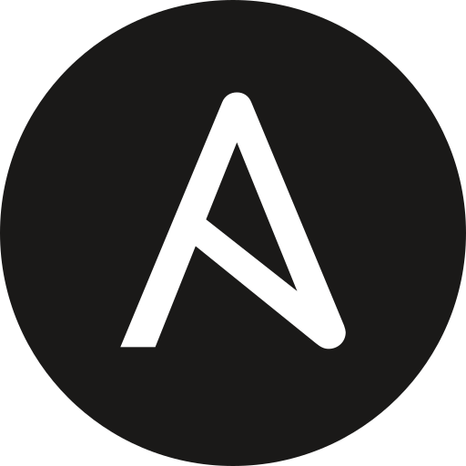
Ansible configures my Debian machines after I create them. Playbooks keep routine setup steps consistent.
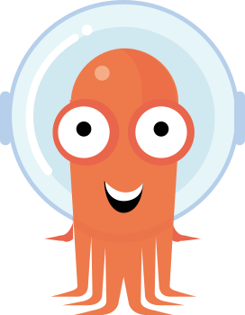
Argo CD applies the application configuration in Git to Kubernetes and shows me when deployments drift or fail.
Git tracks my infrastructure, applications, and documentation. Its history helps me understand and review every change.
In progress
EducationInformation Technology – System Administration
Earned
CertificatesCoursework
LabsFEATURED BUILD / EMILIANY
COMMERCE, CONNECTED.A jewelry shop built on connected services.
I built the bilingual storefront and connected the services that handle customer accounts, orders, marketing preferences, and support. The integration work keeps each service responsible for a clear part of the customer experience.
Explore EmilianyStorefront · Service integrations · Infrastructure
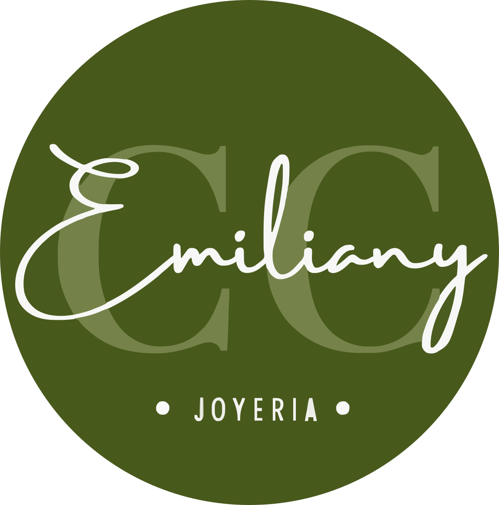
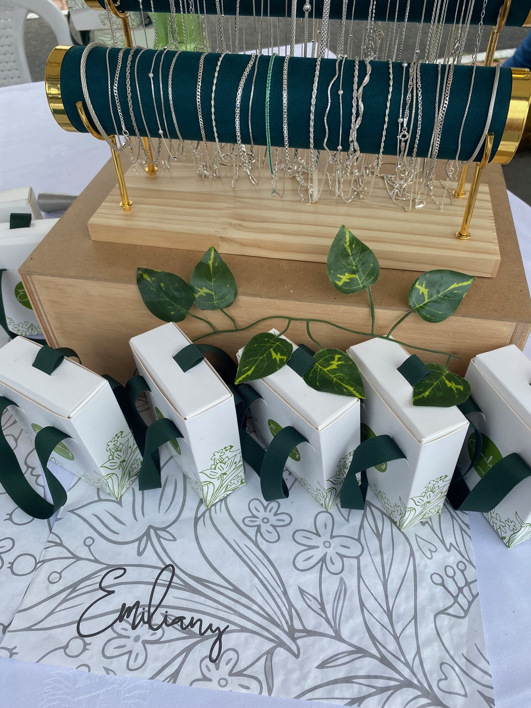
EMILIANY · COLOMBIAN SILVERIndulge in what we offer.
BEHIND THE EXPERIENCE
Customers see the Next.js shop. Each service behind it has a job.
Verifies who’s signing in.
Manages customers, products, carts and orders.
Keeps customer contacts available to the business.
Manages marketing contacts and email preferences.
Turns contact messages into support tickets.
FOLLOW A CUSTOMER JOURNEY
See what happens behind each customer action.
The storefront shows the collection. Medusa handles products, carts, and orders.
Browse jewelry in English or Spanish.
Load products and prices, manage the cart, and submit checkout.
Find order history and manage profile and addresses.
Medusa supplies the live product data. Example items are for browsing only. Odoo product sync is currently off; Odoo receives customer contacts.
Customers can sign in with Google or with an email and password.
Google authenticates the customer through Medusa’s Google provider.
New customers accept Terms and Privacy before their Medusa customer account is created.
The storefront keeps the session in a secure HttpOnly cookie.
A matching Google email cannot take over a password account. Customers must enter their password to link the two. Store sign-in is separate from staff access, and marketing email is optional.
Medusa stores customer profiles. Background jobs update the other business tools.
Medusa saves profile changes and queues updates for the other tools.
Odoo receives customer contact details; Mautic receives contact and marketing preference updates.
Marketing follows each customer’s choice. Mautic opt-outs flow back to the shop.
Odoo and Mautic updates run in the background and retry if they fail, so signup does not wait. A newsletter signup goes only to Mautic. Customer records alone do not give permission to send marketing.
The contact form sends customer questions to the support queue.
The customer fills out the storefront contact form.
The contact API checks the request; Redis limits abuse and duplicate submissions.
The team handles the request in its support queue. Zammad sends the acknowledgement.
The form filters duplicate messages for 24 hours. If delivery is uncertain, the request stays pending for a later check. Replies to the acknowledgement email do not enter Zammad automatically; customers can use the form and include their ticket number.
Runs on Antalos, my infrastructure platform. Kubernetes runs the services; Argo CD applies deployment settings from Git so changes can be reviewed and repeated.
THE HARDWARE BEHIND ANTALOS
I built and operate the physical foundation for Antalos: compute, storage, and a segmented network. This lab gives me hands-on practice with virtualization, networking, deployment, and troubleshooting from the hardware up.
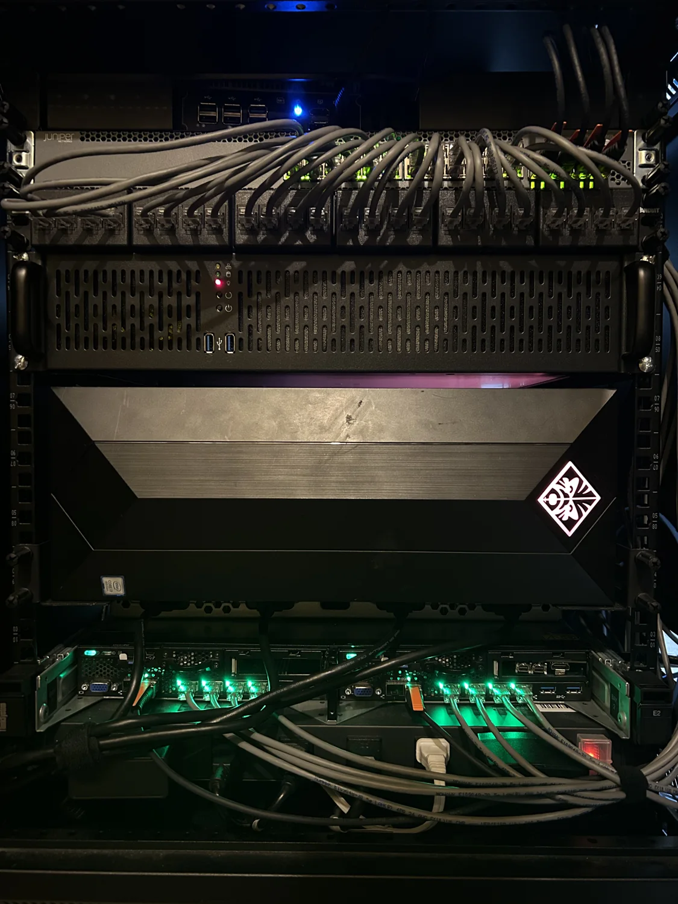
SMALL FOOTPRINT, MANY ROLES
The rack holds a firewall, switch, shared storage, and three Proxmox hosts. Two Lenovo servers run beside a reused HP Omen with a GPU.
I buy used hardware, repair it, and reuse parts where I can. A Cat6 patch panel keeps cabling tidy, while an APC UPS and PDU handle power.
01 / HARDWARE
OPNsense runs on a Beikong H31F with an Intel N150, 8 GB RAM, three 2.5 GbE ports, and two SFP+ ports. A Juniper EX3300-24T provides 24 gigabit copper ports and four 10 GbE SFP+ ports.
Dedicated firewall · Managed switching
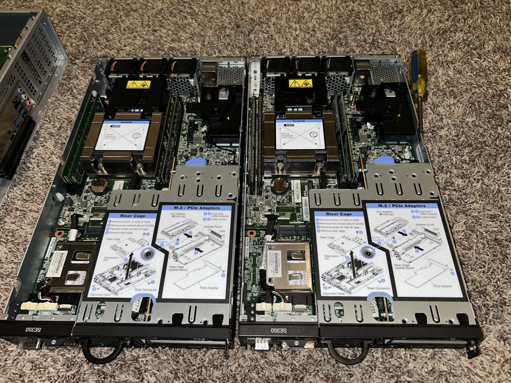
Each Lenovo node has a Xeon D-2143IT with 8 cores / 16 threads and 48 GB ECC RAM. Proxmox divides these machines into Talos Kubernetes nodes, Debian workloads, and HAProxy VMs.
96 GB ECC RAM across the pair
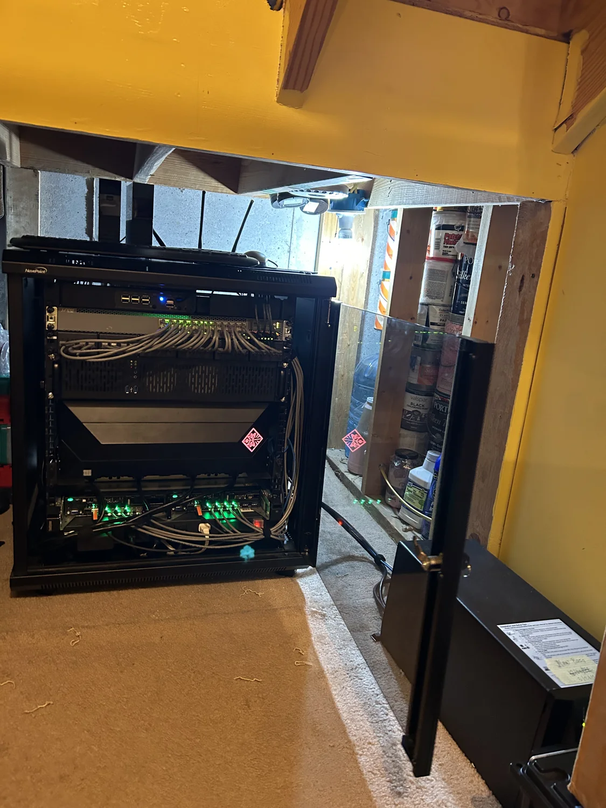
An Intel Core i7-9700KF and 16 GB RAM give this host a second life. The VM plan assigns an RTX 3060 with 12 GB VRAM to Debian for LLM inference, alongside Talos control and worker VMs.
GPU passthrough · Dedicated inference VM
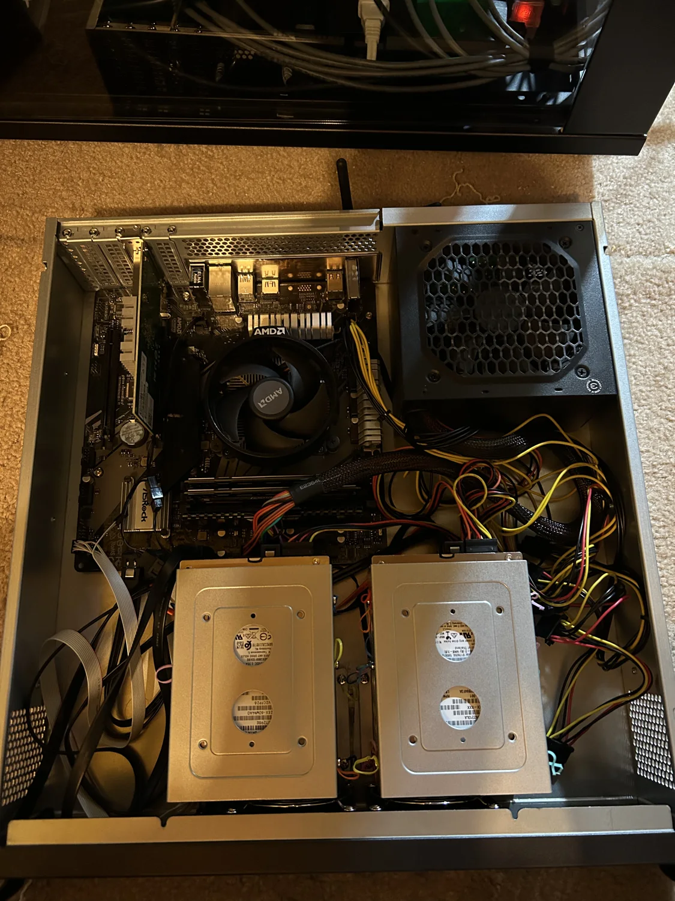
A Ryzen 3 2200G powers the 2U, four-bay NAS with separate gigabit management and SFP+ connectivity. An APC SUA1500 UPS, AP9630 network card, and 12-outlet PDU round out the supporting hardware.
Shared storage · Networked UPS management
02 / NETWORK DESIGN
Management uses dedicated gigabit access links on VLAN 20. The Proxmox hosts carry internal and DMZ service traffic over 10 GbE trunks on VLANs 30 and 40.
Proxmox, Lenovo XCC, TrueNAS, and UPS management interfaces.
Proxmox VM networks use SFP+ trunks. TrueNAS also connects over SFP+ for storage traffic.
Simplified network plan. Firewall rules control access between segments.
General client internet access.
Device administration; outbound internet.
Inward-facing services and connected IoT.
Outward-facing services in a separate zone.
Internal access with no internet access.
Isolated experiments with no network access beyond the segment.
A separate network for work applications.
03 / FROM MACHINES TO SERVICES
The VM plan puts a Talos control node and worker on each Proxmox host. The Lenovo servers also run HAProxy and Debian workloads for testing, Jellyfin, and Immich machine learning. An Intel Arc A310 goes to the media VM.
Proxmox runs the VMs, Talos runs Kubernetes, and Antalos defines the services on top.
EXPLORE THE APPLICATION STACK ↑04 / INSIDE THE HOMELAB
A few views of the rack and its hardware. Select a photo to see it full size.
Based on my October 2026 hardware inventory and network and VM plans. Photos show different stages of the build; planned allocations may differ from what is running.
INSIDE ANTALOS
A closer look at the applications configured in Antalos, grouped by purpose. Each card links to its deployment configuration. This is a documented inventory, not a live status dashboard.
40 services
Drag the card handles, or focus a handle and use arrow keys. Home returns a card. On mobile, scroll to browse.
Work & collaboration
PDF tools in the browser
Explore configuration ↗ for BentoPDFWork & collaboration
Self-hosted scheduling
Explore configuration ↗ for Cal.diyWork & collaboration
Stack documentation
Explore configuration ↗ for Antalos DocsWork & collaboration
Git hosting and collaboration
Explore configuration ↗ for ForgejoWork & collaboration
Files, sharing, and collaboration
Explore configuration ↗ for NextcloudWork & collaboration
Personal knowledge workspace
Explore configuration ↗ for ObsidianWork & collaboration
Mail and calendar services
Explore configuration ↗ for StalwartWork & collaboration
Remote desktop access
Explore configuration ↗ for RustDeskWork & collaboration
Client and server backups
Explore configuration ↗ for UrBackupBusiness & commerce
Commerce storefront
Explore configuration ↗ for EmilianyBusiness & commerce
Invoices and billing
Explore configuration ↗ for Invoice NinjaBusiness & commerce
Marketing automation
Explore configuration ↗ for MauticBusiness & commerce
Commerce backend
Explore configuration ↗ for MedusaBusiness & commerce
Business management
Explore configuration ↗ for OdooBusiness & commerce
Customer relationship management
Explore configuration ↗ for SuiteCRMBusiness & commerce
Customer support and ticketing
Explore configuration ↗ for ZammadAI & automation
Gateway for language models
Explore configuration ↗ for LiteLLMAI & automation
Conversational AI workspace
Explore configuration ↗ for Open WebUIAI & automation
Visual automation flows
Explore configuration ↗ for Node-REDAI & automation
Home automation
Explore configuration ↗ for Home AssistantAI & automation
Dependency update automation
Explore configuration ↗ for RenovateAI & automation
Automated image rollout checks
Explore configuration ↗ for Website image refreshIdentity & security
Identity and single sign-on
Explore configuration ↗ for AuthentikIdentity & security
Private network control plane and Headplane
Explore configuration ↗ for HeadscaleIdentity & security
Password management
Explore configuration ↗ for VaultwardenIdentity & security
Collaborative threat protection
Explore configuration ↗ for CrowdSecIdentity & security
Certificate lifecycle automation
Explore configuration ↗ for cert-managerIdentity & security
Encrypted secrets for GitOps
Explore configuration ↗ for Sealed SecretsPlatform & observability
Declarative GitOps delivery
Explore configuration ↗ for Argo CDPlatform & observability
Cluster management and configuration
Explore configuration ↗ for RancherPlatform & observability
Ingress routing and configuration
Explore configuration ↗ for TraefikPlatform & observability
Service availability monitoring
Explore configuration ↗ for Uptime KumaPlatform & observability
Metrics and observability stack
Explore configuration ↗ for VictoriaMetricsPlatform & observability
Application dashboard
Explore configuration ↗ for HomepagePlatform & observability
Kubernetes resource metrics
Explore configuration ↗ for Metrics ServerPlatform & observability
Load balancing for bare metal
Explore configuration ↗ for MetalLBPlatform & observability
PostgreSQL database operator
Explore configuration ↗ for CloudNativePGPlatform & observability
Database operator and CRDs
Explore configuration ↗ for MariaDB OperatorPlatform & observability
Kubernetes storage
Explore configuration ↗ for OpenEBSPlatform & observability
Shared filesystem storage
Explore configuration ↗ for NFS CSI DriverInventory from Antalos application definitions · October 25, 2026. Includes platform services; this is not a live health monitor. Browse the stack ↗
I want to take on more responsibility for the systems I build and support. I’m working toward that through hands-on projects, my degree, and certifications.
These are planned goals and target dates, not completed credentials.
Update my resume, portfolio, and homelab documentation to show what I’ve built.
Earn CompTIA Network+ or a similar professional networking certification.
Earn the Microsoft Azure Administrator Associate (AZ-104) certification.
Complete my Bachelor of Applied Science in Information Technology – System Administration.
Move into a systems administration or infrastructure engineering role with more responsibility.
Gain more experience with cloud infrastructure, automation, and infrastructure as code.
Progress into a senior systems, cloud, or infrastructure engineering position.
Mentor other IT professionals and help make infrastructure design decisions.
Hiring for systems administration or infrastructure work? I’d be glad to discuss my experience and learn about your team.
antblu@antblu.net